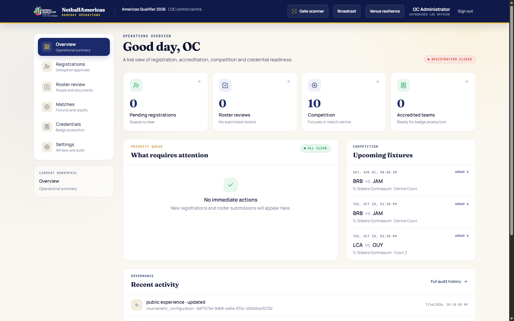
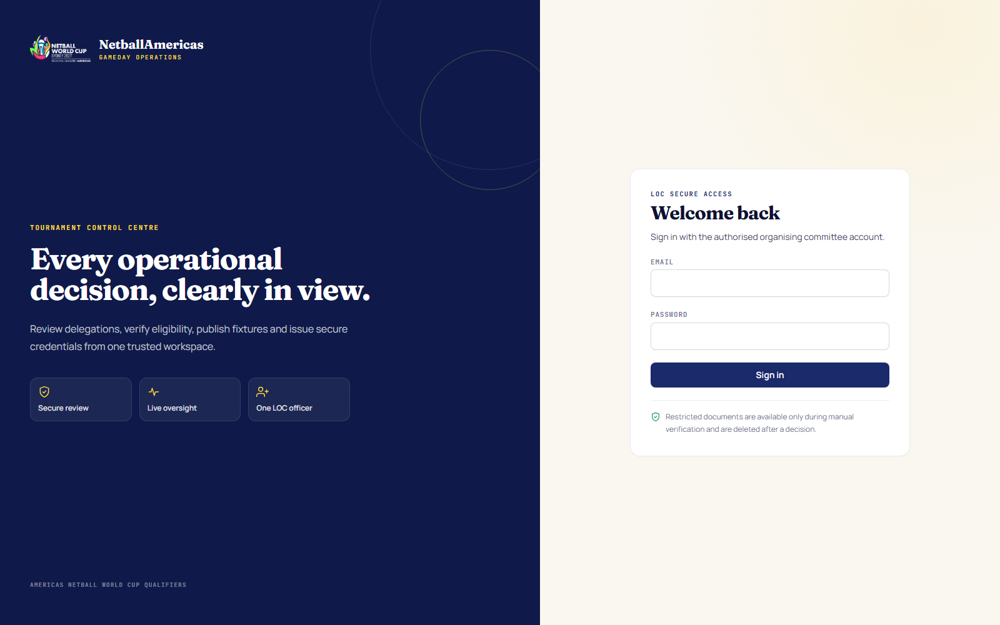
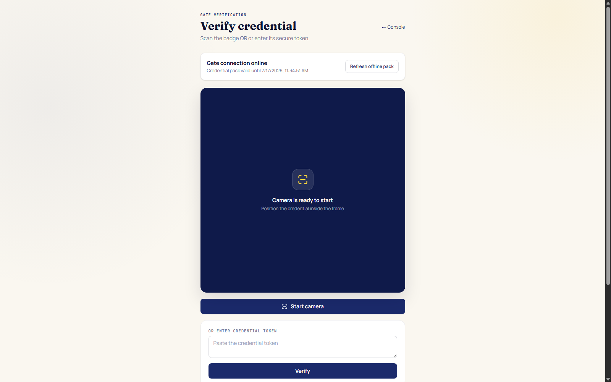
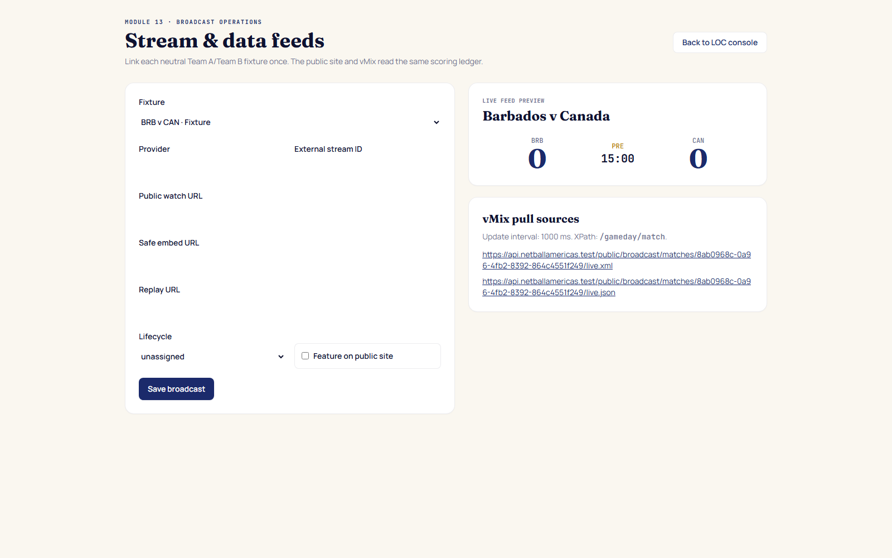
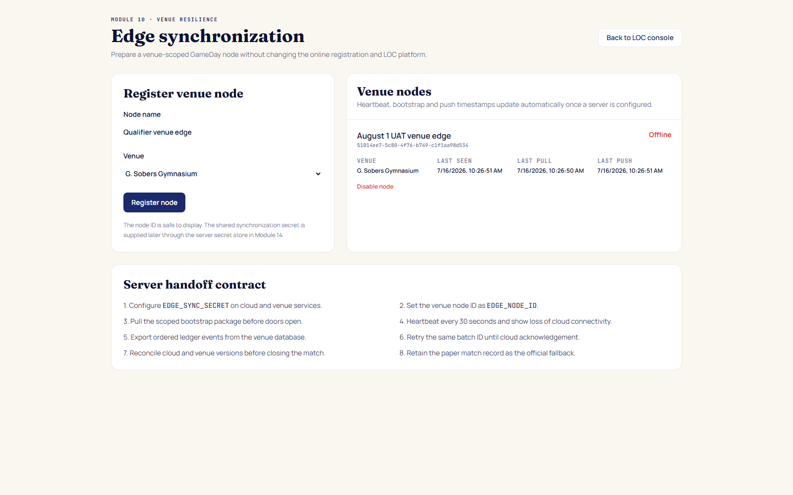

Chapter 1
Purpose and operating rules
This manual governs the human workflow of the tournament. The system provides controls and audit evidence; the LOC and assigned officials remain responsible for accurate decisions, paper fallbacks and timely escalation.
Non-negotiable rules
- Use neutral Team A and Team B; never interpret them as home and away.
- A player’s roster position is a primary preference, not a permanent position. Match positions may change through the coach’s team sheet and substitutions.
- Manual identity verification is performed by the LOC. The system does not make the authenticity decision.
- Confirm a result only after reconciling the paper record and electronic ledger.
- Keep the paper match record as the official operational fallback.
- Never send passports, national IDs or credentials through casual messaging channels.
Chapter 2
Roles and authority
| Role | May do | Must not do |
|---|---|---|
| LOC officer | Registration/roster/identity decisions, credentials, competition setup, GameDay staffing, venue and broadcast configuration. | Change SportsBB event policy or commercial/public content. |
| Authorized team officer | Maintain its delegation, players, officials, evidence and match team sheets. | Access another team, LOC decisions or scoring. |
| Match supervisor | Check readiness, release match, record operational incidents. | Score goals, operate clock or confirm final result unless separately assigned. |
| Scorer | Record player-attributed goals, centre pass and immutable corrections. | Operate match clock or approve final result. |
| Timekeeper | Start/end periods, start/stop clock, suspend/resume match. | Record goals or alter lineups. |
| Statistics & lineup | Capture statistics, lineup/position changes and substitutions. | Score, time or confirm results. |
| Result approver | Reconcile paper/electronic record and confirm official result. | Confirm before the match and reconciliation gates are complete. |
| Gate operator | Scan credentials and apply displayed access decision. | Override credential status or LOC accreditation decisions. |
Chapter 3
Sign-in and security
LOC officer
- Open
https://platform.netballamericas.org. - Confirm the correct hostname and TLS padlock.
- Enter the named LOC officer email and password.
- Confirm the header identifies the LOC operational console.
- Sign out whenever the workstation is left unattended.

GameDay official
- Open
https://platform.netballamericas.org/gamedayor the approved venue-local equivalent. - Enter the personal role-account credentials supplied by the LOC.
- Confirm the screen names the expected role.
- Confirm only assigned fixtures are shown.
- If a wrong role or fixture appears, stop and notify the LOC before entering data.

Chapter 4
Operational day sequence
| Time | LOC action | Role action | Exit condition |
|---|---|---|---|
| Start of day | Check Platform, fixtures, credentials, gate pack, venue node and broadcast records. | Officials confirm device and login. | No unresolved blocking alert. |
| 90–60 min before match | Confirm fixture, court, crew assignments and team-sheet status. | Supervisor confirms crew presence. | Five roles assigned; both team officers can submit sheets. |
| 45–20 min | Resolve accreditation/team-sheet exceptions. | Stats/lineup reviews the submitted sheets; scorer/timekeeper verify consoles. | Both sheets locked and valid. |
| 10 min | Stand by for escalation. | Supervisor runs readiness; paper record positioned. | Match status Ready. |
| Live match | Monitor, do not operate another role’s controls. | Each official performs only assigned commands. | Four periods complete with synchronized ledger. |
| Post-match | Support exception resolution and publication. | Result approver reconciles and confirms. | Final status, paper record secured, feeds updated. |
| End of day | Review audit/scan activity, unresolved incidents and tomorrow’s schedule. | Sign out and return equipment. | Daily closeout recorded. |
Chapter 5
Registration decisions
Review a submitted team registration
- Open Delegation approvals.
- Select a submitted delegation.
- Confirm team name, association, country, contact name, contact email, phone, contact role/title and expected squad/travelling party.
- Confirm consent acknowledgement is recorded.
- Compare the represented country with the published eligible-country list.
- If the record is complete and eligible, select Approve.
- If it can be corrected, select Return and enter a specific, actionable note.
- If it is ineligible or should not proceed, select Reject and enter the reason.
- Confirm the resulting status and audit entry.
Decision-writing standard
Good return note
“Contact role/title is missing. Please add the authorized officer’s role and resubmit.”
Poor return note
“Incorrect.” This does not tell the team what must change.
Chapter 6
Roster review
Validate roster composition
- 10–15 active players.
- No more than three reserves.
- Required Team Manager, Coach and Primary Care roles present.
- No more than two additional officials with named designations.
- Head of Delegation/delegate declaration present; the person may also be a team official.
- Bench allocation does not exceed 17.
Review each player
- Confirm first, middle and surname fields.
- Confirm nationality and date of birth.
- Read the biography and confirm the configured minimum length.
- Check profile photo quality and identity.
- Confirm required passport or national-ID evidence has been submitted.
- If nationality differs from the represented team, confirm the eligibility declaration states that criteria have been met and proof will be available to organizers by the required deadline.
- Treat listed playing position as a primary preference only.
Review each official
- Confirm Christian/first name, middle initials and surname.
- Confirm role and country.
- Check profile photo.
- Read the short role biography.
- Confirm any “Other” role has a clear designation.
- Confirm Head of Delegation/delegate status.
Decide
- Open the roster detail.
- Review all outstanding evidence/validation indicators.
- Select Return for correction with a precise note if incomplete.
- Select Approve/accredit only after every required person and document has passed.
- Confirm credentials are issued only for approved/accredited persons.
Chapter 7
Manual identity verification
- Open the person in Roster review.
- Select View identity.
- Confirm the evidence type is an accepted passport information page or national ID.
- Check that the image is legible and appears complete.
- Compare names, nationality and date of birth against the roster record.
- Assess validity/authenticity according to the LOC’s approved manual-verification procedure.
- If acceptable, select Verified. If not, select Rejected and record a useful note.
- Confirm the decision is bound to the current document identifier.
- After decision, the source object is deleted; only the outcome/audit evidence remains.
Chapter 8
Accreditation and badges
Issue credentials
- Confirm delegation and roster are approved.
- Confirm the person’s required identity status is verified.
- Open Badge production.
- Select the accredited delegation/person.
- Review name, photo, category and configured access zones.
- Issue or print the credential.
- Inspect print alignment and QR clarity.
- Record physical handover using the LOC’s distribution log.
Revoke or reissue
- Locate the current credential.
- Select revoke and enter a reason of at least three meaningful characters.
- Confirm gates show the credential as revoked.
- Correct/reapprove the underlying person if required.
- Issue the replacement and destroy/retain the former badge according to policy.
Chapter 9
Gate scanning and offline mode

Before opening the gate
- Open
/scanon the approved device. - Sign in as authorized accreditation/gate staff.
- Allow camera access.
- Install the PWA if the device policy permits it.
- Select refresh/download of the offline credential pack.
- Confirm the pack is current and contains issued/revoked status.
- Perform one issued and one revoked test scan.
- Confirm recent activity records both decisions correctly.
Scan a person
- Ask the person to present the credential.
- Scan the QR code; avoid typing tokens unless camera operation is impossible.
- Read the displayed result and identity details.
- Apply the displayed access-zone decision.
- For a rejection, do not override; refer the person to the LOC resolution point.
- Select next scan only after the current decision is understood.
Offline operation
- When connectivity drops, confirm the scanner indicates offline mode.
- Continue scanning against the most recent 24-hour pack.
- Understand that the device stores hashed credential references, not raw tokens, in the pack.
- Observe the queued scan count.
- When service returns, keep the application open so queued scans synchronize automatically.
- Confirm the queue returns to zero and the server audit shows one event per scan.
- If the pack is expired, stop relying on offline decisions and contact the LOC/technical lead.
Chapter 10
Competition setup
Create venues and courts
- Open Fixtures and results.
- Under Venues & courts, enter the venue name, address/timezone where required.
- Select Add venue.
- Select the venue, enter the court name and select Add court.
- Verify every playable court is active before adding fixtures.
Create stages and groups
- Create the stage with an approved name.
- Select group or knockout.
- Add eligible delegations to the stage/group.
- Confirm the displayed order and membership.
Add a fixture
- Select stage/group if applicable.
- Select Team A and Team B.
- Set scheduled date/time, court, round label and sort order.
- Select Add fixture.
- Resolve any team/court collision; the server blocks overlapping 90-minute allocations.
- Use postponed or cancelled status when required; do not delete historical fixtures casually.
Chapter 11
GameDay accounts and assignments
Create a role account
- Open GameDay staffing & access.
- Enter the official’s named email and display name.
- Create a strong temporary password of at least 12 characters.
- Select exactly one role: Match Supervisor, Scorer, Timekeeper, Statistics & Lineup, or Result Approver.
- Select Create account.
- Deliver credentials securely and require the official to confirm access before match day.
Assign a match crew
- Select the fixture.
- For each of the five roles, select the correct role account.
- Save each assignment.
- Confirm all five roles are present exactly once.
- Ask every official to sign in and verify that only the assigned fixture appears.
Chapter 12
Match team sheets
The authorized team officer selects the match squad. The LOC resolves eligibility/accreditation issues but should not choose players or positions for the coach.
- Team officer opens the relevant fixture in Team Portal.
- Select 7–15 accredited players.
- Assign exactly seven unique starting positions: GS, GA, WA, C, WD, GD and GK.
- Place up to eight additional selected players on the bench.
- Mark captain where applicable.
- Review and submit the sheet.
- After submission, the sheet locks for the match readiness process.
Chapter 13
Pre-match readiness
- Correct fixture, court and start time displayed.
- Both team sheets submitted and locked.
- Each selected player is accredited.
- Exactly seven starting positions per team.
- All five GameDay role assignments present.
- All officials signed in on approved devices.
- Scorer confirms player lists and Team A/Team B orientation.
- Timekeeper confirms period duration and clock controls.
- Statistics/lineup confirms starting positions.
- Paper score sheet, pens and incident record ready.
- Broadcast preview and public feed checked if applicable.
- Venue/local mode indicator understood by crew.
Supervisor releases the match to Ready.
Do not start. Resolve with LOC/team/technical lead.
Chapter 14
Match supervisor workflow
- Sign in and select the assigned fixture.
- Open Match readiness.
- Confirm both submitted team sheets and all five assigned roles.
- Confirm the paper fallback is present.
- Select the readiness/release action only when every check passes.
- During the match, monitor role coordination and system/venue status.
- Use the incident log for injury, warning, suspension, technical or other incidents; enter a meaningful note and Team A/B when applicable.
- Coordinate a formal suspend/resume decision with the timekeeper when needed.
- After the fourth period, ensure the electronic ledger is stable and available to the result approver.
Chapter 15
Timekeeper workflow
- Sign in and select the assigned match.
- Confirm status is Ready before starting.
- Select Start next period for Quarter 1.
- Select Start clock at the official signal.
- Use Stop clock only under the applicable match rules.
- Restart with Start clock.
- At period completion, select End period.
- Repeat for all four periods.
- For an exceptional stoppage, select Suspend match and enter the reason. Resume only after authorization.
- Confirm the clock is stopped and fourth period ended before result reconciliation.
Chapter 16
Scorer workflow
- Sign in and select the assigned match.
- Confirm Team A/Team B names and starting players.
- Set/confirm the next centre pass when instructed.
- For each goal, select Team A or Team B and the scoring player where available.
- Confirm the visible score and recent-goals entry after every command.
- If a goal was entered incorrectly, use Correct on that event and enter a clear reason.
- Never silently overwrite or mentally offset an error; corrections are immutable ledger events.
- At each interval, compare electronic totals with the paper record.
- After the fourth period, stop entering data unless resolving a documented discrepancy with the supervisor/result approver.
Correction examples
Acceptable
“Goal attributed to Team A in error; paper sheet confirms Team B GA.”
Not acceptable
“Mistake.” State what changed and the evidence used.
Chapter 17
Statistics & lineup workflow
- Sign in and select the match.
- Confirm the displayed starting lineup matches both submitted team sheets.
- Record supported statistics against the correct player: goal attempt, intercept, gain, turnover, deflection, rebound or penalty.
- For a substitution/position change, select the player and new position or bench state.
- Enter a meaningful reason of at least three characters.
- Confirm no two on-court players occupy the same position.
- Continue reflecting coaching changes throughout the match.
- At intervals, compare court positions with the electronic lineup.
- At match end, verify the final lineup/history before result approval.
Chapter 18
Result approver workflow
- Sign in and select the assigned match.
- Wait until four periods are complete and the clock is stopped.
- Collect the signed paper match record.
- Compare Team A score, Team B score, period completion and all recorded corrections.
- Review unresolved incidents or ledger conflicts with the supervisor.
- If the electronic record is wrong, require the appropriate role to enter an attributed correction; never confirm first and “fix later.”
- Enter a confirmation note describing reconciliation, for example “Paper record reconciled; totals and corrections agree.”
- Select Confirm official result.
- Verify status becomes Final and the public/broadcast projections update.
- Secure the paper record under the event retention procedure.
Chapter 19
Broadcast operations

- Open Stream & data feeds.
- Select the fixture using the neutral Team A v Team B label.
- Enter provider and external stream ID.
- Enter the approved public watch URL and safe embed URL.
- Set lifecycle: Unassigned, Scheduled, Live, Ended or Archived.
- Select Feature on public site only for the intended featured stream.
- Select Save broadcast.
- Confirm the live preview shows correct Team A/Team B abbreviations, score, quarter and clock.
- Configure vMix to pull the displayed XML or JSON URL every 1000 ms. XML XPath is
/gameday/match. - After the stream ends, set Ended, add replay URL when available, then set Archived at the approved time.
TeamA* and TeamB*. There are deliberately no Home/Away fields.Chapter 20
Internet loss and venue standby
Venue resilience is optional. When provisioned, the online platform remains primary and the local GameDay node is a standby or venue-operating surface.

LOC preparation
- Open Venue resilience.
- Register a node name and bind it to the correct venue.
- Give the displayed node ID to the authorized technical lead; it is not the secret.
- Confirm the node shows recent Last seen, Last pull and Last push timestamps after provisioning.
- Do not handle or display the synchronization secret.
- Complete a disconnect/reconnect rehearsal before competition.
During connectivity loss
- Supervisor announces the operating mode and records the incident time.
- Officials continue on the approved local GameDay surface if it was provisioned.
- Keep paper records running continuously.
- Do not operate the same match independently in cloud and local surfaces.
- Technical lead restores connectivity; synchronization retries the same deterministic batch without duplicating accepted events.
- Before result confirmation, compare venue and cloud sequence/version, scores and event ledger.
- If no local edge was provisioned, suspend electronic operation and follow the paper continuity plan until service returns.
Chapter 21
Exceptions and incidents
| Situation | Immediate action | Owner/escalation |
|---|---|---|
| Team changes player after accreditation | Team edits roster; system reopens affected review and revokes applicable credentials. | LOC reviews; SportsBB only if system issue. |
| Sick/injured player replacement after close | Existing team account makes amendment; no new team registration is created. | LOC verifies eligibility/identity and reissues credential if approved. |
| Credential rejected at gate | Do not override; direct person to LOC resolution desk. | LOC checks status and underlying accreditation. |
| Wrong score entered | Scorer records immutable correction with reason. | Scorer; supervisor monitors. |
| Clock discrepancy | Stop safely, compare official record and incident-log the decision. | Timekeeper and supervisor. |
| Wrong role/fixture visible | Stop entry and sign out. | LOC corrects assignment; SportsBB if authorization defect. |
| Internet loss | Declare mode, continue approved local/paper procedure, prevent dual entry. | Supervisor and technical lead. |
| Suspected data/privacy exposure | Stop access, preserve evidence and do not circulate the material. | Immediate SportsBB/privacy escalation. |
Incident record minimum
- Date/time and timezone.
- Fixture/person/system affected.
- Observed facts, not assumptions.
- Operational impact.
- Actions taken and by whom.
- Paper/electronic evidence references.
- Resolution and remaining follow-up.
Chapter 22
Match and day closeout
Match closeout
- Four periods ended and clock stopped.
- Goals/corrections agree with paper.
- Lineup and incident records complete.
- Venue/cloud ledger reconciled if edge mode was used.
- Result approver entered a confirmation note.
- Match status Final.
- Public and broadcast projections correct.
- Paper record signed and secured.
End-of-day LOC closeout
- All completed matches final.
- Postponed/suspended/cancelled matches correctly labelled.
- Outstanding registrations/rosters documented.
- Credential revocations/reissues accounted for.
- Offline gate queue is zero.
- Venue node shows no unresolved synchronization error.
- Tomorrow’s courts, fixtures and assignments verified.
- Incidents handed to SportsBB where required.
- LOC signed out and equipment secured.
Chapter 23
Troubleshooting
| Symptom | Likely check | Safe response |
|---|---|---|
| Page remains on preparation screen | API/domain/certificate and browser console. | Confirm service health, hard refresh once, then escalate; do not repeatedly enter data. |
| LOC cannot approve | Registration/roster state and missing fields. | Resolve validation or return with actionable note. |
| Identity decision unavailable | Current document ID and required category. | Reopen the latest document; never reuse a prior decision. |
| Badge QR will not scan | Print contrast, camera permission and credential status. | Reprint/reissue through LOC controls; do not copy raw token. |
| Match cannot become Ready | Both sheets, seven positions and all five assignments. | Complete the missing gate; do not bypass it. |
| Button disabled for official | Role, match assignment, match status and latest version. | Refresh state; if assignment is wrong, LOC corrects it. |
| Version conflict | Another official entered a newer event. | Refresh the match ledger and repeat only if the intended command is still required. |
| Offline scans not uploading | Connectivity, queue count and session. | Keep PWA open, restore network, refresh pack after queue clears; escalate if persistent. |
| vMix data stale | Feed URL, 1000-ms interval, match state and API. | Verify the browser feed preview, then correct vMix source or escalate API issue. |
Chapter 24
Printable checklists
LOC launch checklist
- Named LOC account works and SportsBB control is denied.
- Registration/roster/identity decision workflow rehearsed.
- Badge printer and QR scanner tested.
- Offline gate pack and replay tested.
- Venues, courts, stages and fixtures verified.
- Five GameDay role accounts per crew prepared.
- Full four-quarter rehearsal passed.
- Broadcast preview/vMix source tested.
- Paper continuity kit ready.
- Escalation contacts distributed.
Per-match crew checklist
- Correct match and Team A/Team B.
- Both team sheets submitted.
- All five officials assigned and signed in.
- Starting positions verified.
- Clock/score/stat consoles ready.
- Paper record open.
- Broadcast/public preview correct.
- Operating mode confirmed.
- Supervisor releases Ready.
- Final paper/electronic reconciliation completed.
Gate checklist
- Approved device charged and camera allowed.
- Current 24-hour offline pack loaded.
- Issued and revoked test credentials scanned.
- Queue count zero at opening.
- Rejected persons referred, not overridden.
- Queue zero after reconnection and close.